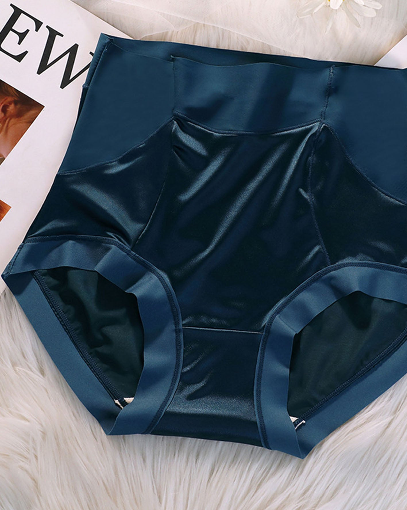

Investigación real · 9 de octubre de 2026 · Colombia, México, Estados Unidos y Perú · caso faja 2667
Por eso cada anuncio tiene un puntaje de 0 a 100 que mide qué tan fuerte lo están pautando. No mide ventas. Se arma así:
Por eso aquí el puntaje máximo real es cerca de 80. Un 58 es un puntaje alto.
| Marca | País | Anuncios | Días prendido (máx.) | Versiones (máx.) | Lugares donde sale | Puntaje (de 80) |
|---|---|---|---|---|---|---|
| Lucia Recomienda | CO | 3 | 378 | 1 | 5 (con WhatsApp) | 58 |
| Nikmed | PE | 1 | 556 | 1 | 4 | 58 |
| Glow Body Shop | PE | 1 | 460 | 1 | 4 | 58 |
| Princess Beauty * | PE | 1 | 420 | 1 | 2 | 52 |
| BODY KIMS FAJAS PERU | PE | 4 | 281 | 1 | 5 | 48 |
| Lami Bra | PE | 4 | 265 | 1 | 6 | 47 |
| Stella Fajas Colombianas | MX | 3 | 273 | 1 | 5 | 47 |
| CurveShe | CO, PE, US | 6 | 251 | 2 | 6 | 45 |
| Brilla Plus - Perú | PE | 2 | 250 | 1 | 5 | 45 |
| ARIA Store | PE | 1 | 225 | 1 | 5 | 42 |
| Maraisa | PE | 7 | 217 | 1 | 4 | 41 |
| Shapshe | US | 10 | 207 | 1 | 6 | 40 |
| Claudia Ramirez Fajas | PE | 10 | 205 | 2 | 5 | 40 |
| Fajas Forma Tu Cuerpo México | MX | 21 | 83 | 3 | 6 | 32 |
| Forma Tu Cuerpo/FTC | CO | 16 | 73 | 5 | 6 | 32 |
| Fajas Forma Tu Cuerpo US | US | 17 | 84 | 2 | 6 | 29 |
| Curvy-faja | MX, US | 19 | 95 | 2 | 6 | 28 |
* Princess Beauty no vende fajas: es un tratamiento estético que regala la faja. Lo mismo pasa con DM Medicina Estética, Eclipse Jeans, Kiki Sport (leggins) e Innova Life (short levanta cola), que aparecen más abajo en la lista. Nikmed vende accesorios para después de la lipo (tablas, cojines) junto con la faja.
| Tipo | Cómo engancha | Formato | Qué ofrece | Precio visto | Cómo apura |
|---|---|---|---|---|---|
| Body de uso diario | Resultado inmediato ("Transforma tu figura al instante") y origen colombiano | Video | Envío gratis + WhatsApp | PE: S/69,90 (Brilla Plus); "desde S/80" (ARIA) | "Últimas unidades" (Lucia), "¡No te quedes sin el tuyo!" (Glow) |
| Postparto | Habla una mamá ("RECOMENDADO por una mamá", Maraisa), soporte y comodidad | Video | Contraentrega en Lima + 7 días para probarla y cambiarla | No lo dice; se cierra por WhatsApp | Casi no apura: quita el riesgo |
| Después de cirugía (Stage 2) | Datos técnicos: "Stage 2", "15 varillas de acero", "Powernet" | Video y catálogo | Combos con accesorios (Nikmed) | US: USD 110 (formatucuerpo.com); USD 79-89 (curvyfaja) | "agota" en la página |
| Cinturilla de látex | Ficha técnica (látex colombiano, 3 niveles de broche, cierre al frente) + "Funcional, sexy y elegante" | Video e imagen | Envío gratis en Lima; pago a cuotas con Addi (CO) | PE: S/159, antes S/199 (Lami Bra) | "Oferta por tiempo limitado" |
| Chaleco con brasier | "Más de 500 reseñas de 5 estrellas" + 3 prendas en 1 | Video | 50% de descuento | No aparece | "Stock limitado" (Mine shop_col) |
| Short levanta cola | Volumen y realce de glúteos | Video | "Precio especial de hoy" | PE: S/130 / S/185 / S/55 (Exclusiva) | "quedan / termina / hoy" |
| Línea de lujo | Colección con nombre propio (Luxury Queen) | Catálogo | Colección | MX: MXN 2.499 (formatucuerpo.com.mx) | "agota" |
"✨Ultimas Unidades" · "Transforma tu figura al instante… ✔️ Calidad 100% colombiana ✔️ Se ajusta a tu cuerpo sin marcar ✔️ Envío GRATIS a todo el país 🚚"
Por qué funciona: resultado inmediato + 3 chulos que responden dudas (origen, que no se marca, envío) + escasez en el título. Botón a WhatsApp. Más de un año sin cambiarlo.
"Enterizo Colombiano Doble Presión 💥" · "✔ Define cintura y abdomen ✔ Corrige postura ✔ Realce de glúteos… Hecho en Colombia 🇨🇴… ¡No te quedes sin el tuyo!"
Por qué funciona: el nombre del producto ya engancha ("Doble Presión"). 3 beneficios, uno por zona del cuerpo, origen y un cierre que apura sin presionar.
"AMARÁS USARLA😍Oferta: S/. 69.90🔥" · "FAJA BODY COLOMBIANA🇨🇴 POWERNET… 💰 Paga al recibir tu pedido… (yape, plin, efectivo…)"
Por qué funciona: el precio en el título filtra a quien no puede pagar. Pagar al recibir quita el riesgo. Es la única imagen con más de 250 días entre las mejores.
"Pagas al Recibir 📦Solo Lima" · "Pruébala por 7 días. Si no te queda perfecta, la cambiamos. Comprar una faja postparto por internet puede dar miedo: '¿Y si no es mi talla? ¿Y si me incomoda?'. Elimina ese riesgo hoy."
Por qué funciona: es el único anuncio que dice el miedo con las palabras de la clienta (talla y comodidad) y lo resuelve con cambio y pago al recibir.
"🔥+40.254 clientas satisfechas" · "OFERTA EXCLUSIVA POR TIEMPO LIMITADO… (90% nailon, 10% lycra) y 4 varillas de acero antideslizantes que NO se doblan ni se marcan."
Por qué funciona: número de clientas en el título, de qué está hecha y una duda resuelta ("no se doblan ni se marcan"). En su página: S/159, antes S/199.
"Stock limitado. Faja Chaleco con Brasier al 50% OFF ⚠️" · "¿Por qué esta faja tiene más de 500 reseñas de 5 estrellas? 🤔⭐ Porque no es solo una faja. Es brasier + chaleco + corrector de postura en UNA prenda."
Por qué funciona: abre con una pregunta que se contesta con reseñas, y justifica el precio con el 3 en 1. Junta escasez, descuento y reseñas sin saturar.

"Ajuste instantáneo. Confianza que dura. 3-4 cm menos en segundos… La Faja Colombiana, tu imprescindible de 2026. 🎁 2.º artículo con 20% de descuento."
Por qué funciona: resultado con número ("3-4 cm") y descuento por llevar varias, que sube lo que gasta cada clienta. En su página: 20% en la 2.ª, 50% en la 3.ª y la 6.ª gratis.
"🛒Primer pedido con 10% de descuento [CÓDIGO: NEW10]" · "✅ No se enrolla ni se mueve… ✅ Totalmente opaca: el tiro alto lo recoge todo. 'Mi celulitis se nota más que cualquier línea de panty, así de invisibles son.'"
Por qué funciona: un testimonio con humor prueba que no se nota. Responde dos dudas (se enrolla, transparenta) y usa el tiro alto como beneficio. El código sirve para medir cuántos compran.
"¿Tienes dudas sobre nuestras fajas? Escríbenos o déjalas en los comentarios." · "Nos preguntaron si nuestras fajas son hechas en Colombia… sí… tenemos un edificio completo dedicado a la confección… madres cabeza de hogar…"
Por qué funciona: responde una pregunta del público. Usa la fábrica propia contra las imitaciones y cuenta una historia. Invita a comentar, y los comentarios ayudan a que el anuncio llegue a más gente.
"ENVIOS A NIVEL NACIONAL" · "NUEVO COSTILLERO 15 VARILLAS DE ACERO😍 MAS 3 BROCHES DE AJUSTE… POWERNET COLOMBIANO… Apto para postparto ✨Apto para postoperatorio… LIMA CONTRAENTREGA… AL POR MAYOR Y MENOR"
Por qué funciona: ficha técnica para la que ya sabe de fajas. Un producto para 3 usos y también venta al por mayor. Tiene 3 versiones casi iguales: está probando qué título funciona mejor.
Se revisaron 11 páginas; 10 son de fajas (la de lp.marcoantonioregil.com es un reto de desinflamación y no aplica).
comentarios-youtube-limpios.csv).| La duda | Cómo la responden los anuncios |
|---|---|
| "¿Y si no es mi talla?" | Maraisa lo dice tal cual. BODY KIMS y Claudia escriben las tallas de XXS a XXL |
| "Se va a notar debajo de la ropa" | "Se ajusta a tu cuerpo sin marcar" (Lucia), "Invisible bajo la ropa" (Mine shop), "fajas colombianas invisibles" (Eclipse) |
| "Se enrolla o se mueve" | "no se enrolla" (Siluet), "ni se enrolla ni se mueve" (Floralshe), "Parte superior que no se enrolla" (CurveShe) |
| "Es incómoda" | "comodidad día a día", "interior de algodón" (Maraisa), "Olvídate de las molestias" (Eclipse) |
| "¿Es colombiana de verdad?" | "100% colombiana" en casi todos, "Distribuidor autorizado" (BODY KIMS), video de la fábrica (FTC US) |
| "No confío en pagar antes" | Contraentrega en Lima (Brilla, Maraisa, BODY KIMS) |
| "Es cara" | Crédito (Stella), Addi (FTC), "Desde S/80" (ARIA) |
| "Las varillas se doblan" | "NO se doblan ni se marcan" (Lami Bra) |
| # | Lo que queremos saber | Cómo se prueba | Cómo se sabe quién ganó |
|---|---|---|---|
| 1 | ¿El cambio de talla vende más que el descuento en postparto? (solo el 3,6% da garantía) | 2 videos iguales. A: "Si no es tu talla, te la cambiamos". B: "X% de descuento hoy". Los dos a WhatsApp | Cuánto cuesta cada conversación y cuántas terminan en pedido. Gana el que tenga el pedido al menos 20% más barato |
| 2 | ¿Poner el precio en el título filtra mejor? | Misma imagen con "Faja body colombiana S/ XX, pagas al recibir" y sin precio | Cuántos compran en WhatsApp y cuánto cuesta cada pedido (no cada mensaje) |
| 3 | ¿Mostrar los broches y la cinturilla de cerca diferencia? | Video de 15 s: broches de 3 niveles + cinturilla + "abdomen completo, tiro alto", contra un video genérico | Cuánta gente hace clic y cuántos ven al menos la mitad del video |
| 4 | En EE. UU. en español, ¿vende más la historia de la fábrica o el descuento por varias? | A: video del taller en Colombia (como FTC US). B: "2.ª faja con 20% de descuento" (como Shapshe) | Cuánto vuelve por cada peso pautado en 7 días y cuánto gasta cada clienta |
| 5 | ¿El pago a cuotas abre el mercado más caro en Colombia y México? | Anuncio de body de lujo con "págala en cuotas" contra el mismo con precio de contado | Cuánto cuesta cada pedido de más de MXN 359 |
Cada prueba corre al menos 7 días antes de decidir. El anuncio que aguante 30 días con un costo por pedido estable se duplica en versiones nuevas.
Se buscó "faja colombiana", "faja reductora" y "faja postparto" en Colombia, México, Estados Unidos y Perú.
| Dónde | Qué trajo |
|---|---|
| Biblioteca de anuncios de Meta (Facebook e Instagram) | 400 anuncios |
| Amazon | 240 productos |
| TikTok | 79 anuncios (no son de fajas) |
| Páginas de venta de esos anuncios | 11 páginas |
| Dato | Herramientas pagas | Este informe |
|---|---|---|
| El anuncio completo (texto, imagen, video) | Sí | Sí, descargado: no se borra |
| Cuánto lleva prendido y sus versiones | Sí | Sí (dato público de Meta) |
| Países, lugares donde sale y página | Sí | Sí, con la página revisada |
| Cuántos anuncios prende por semana | A veces | Sí |
| Cuánto vendió cada anuncio | No. Ninguna lo tiene | No es un dato público |
Las herramientas que muestran "ventas estimadas" las calculan con fórmulas que nadie puede revisar. El dato serio es cuánto tiempo y cuánta fuerza lleva un anuncio prendido, porque nadie sostiene un anuncio que pierde plata.